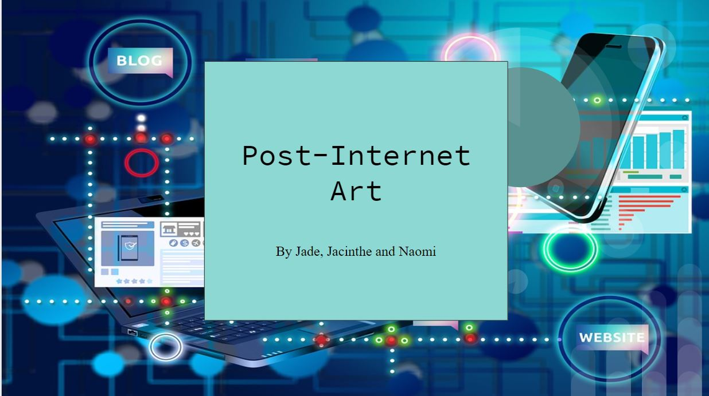
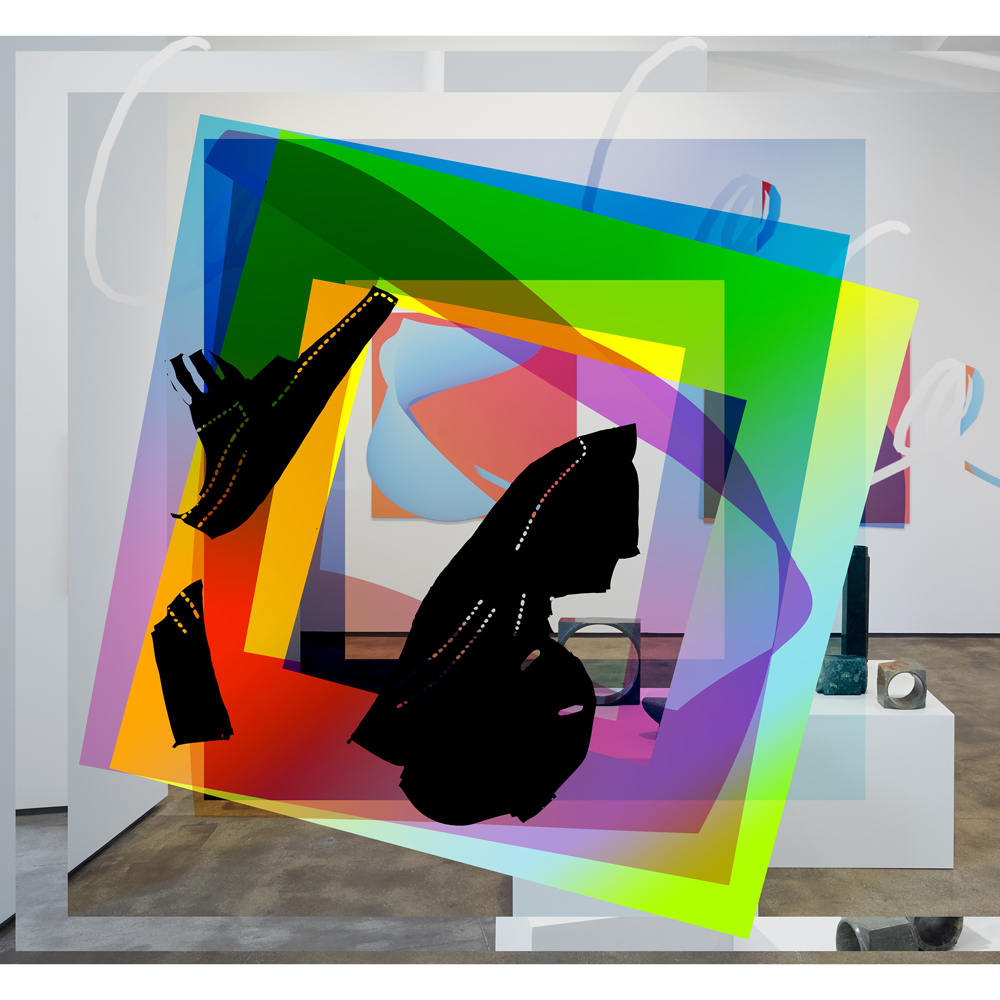

"The Image Object Post Internet" & "From Post Internet Art to Influencer Art"
This week was our turn to present. Here's a link to our google slide presentation

My part of the presentation was Artie Vierkant's text : The Image Object Post Internet
Today, we will be discussing Artie Vierkant text "The image object Post Internet" and Ben Davies' text : "From post internet art to influencer art"
Artie Vierkant
Artie Viekant is an artist active on the Internet and in physical space. In 2010, he published an article entitled “The Image Object Post-Internet” in which he responded to the term post-internet and its relationship to artistic practices. If you look up Artie Vierkan Wikipedia on google, the first link is a link to a wikipedia page called Post-Internet. Which can tell you that this is the main topic surrounding his art.
What is Post Internet?
Some artists call the Post-Internet phenomenon as term for being "Internet Aware". But generally it is described as art that is about the internet's effects on aesthetics, culture and society.
A wierd mix between net.art, new media art and vaporwave
In his text, Vierkant outlined the term Post-Internet as a contemporary moment in the arts that used attention as a form of currency and embraced the concept of universal authorship.
The Post-Internet movement is also distinct from the two historical artistic modes with which it is most often associated, these being New Media Art and Conceptualism. Post internet art therefore attempts to function in the space between these two modes. However, as a label within the art world, Post Internet is highly contested as an imperfect term.
The use of ‘post’ is not intended to denote its usual connotation of ‘after’ –obviously, the internet is no where near being ‘over’ - instead post internet indicates a rupture, much like a break for reflection on the impact digital technologies are having on all aspects of art.
The Image Object Post Internet
In his text, Vierkant surveys the way we engages with images in the post-Internet era, when they can be shared, reproduced, altered, and distributed more easily than ever before in human history. His argument is that in the pre-Internet days, it was difficult to effectively reproduce an artwork because the photographic, scanning, display, and printing technologies we have now simply didn't exist yet. To highlight this, Vierkant refers to his own work-- which are sculptural pieces he makes with photographic means—as "Image Objects," referring to their ephemeral and reproducible nature.
Image Objects are works that exist at the interstice between the physical object and the mediated image.
With the Image Objects series, Vierkant engages with these questions by printing image-based works to appear three-dimensional, and circulating digitally manipulated documentation of them online. On a whole, Image Objects, the sculptures, images, and writing, shaped the emerging discussion around post-internet art.
Artie Vierkant makes one of the central claims of post-internet art: in the reality of the present moment, in which immaterial and material objects increasingly find themselves on equal ontological footing, the work of art becomes an “image object”—part material object, part immaterial image.
This text is an extended statement of artistic purpose and critique of our contemporary relation to objects and images in Post-Internet culture. More than anything, it poses a survey of contemplations and open questions on contemporary art and culture after the Internet.
Post-Internet also serves as an important semantic distinction from the two historical artistic modes with which it is most often associated: New Media Art and Conceptualism.
In the same way that postmodern artists absorbed and adapted the strategies of modernism—fracturing the picture plane, abstraction, etc.—for a new aesthetic era, post-Internet artists have moved beyond making work dependent on the novelty of the Web to using its tools to tackle other subjects. And while earlier Net artists often made works that existed exclusively online, the post-Internet generation frequently uses digital strategies to create objects that exist in the real world.

Back to the main page